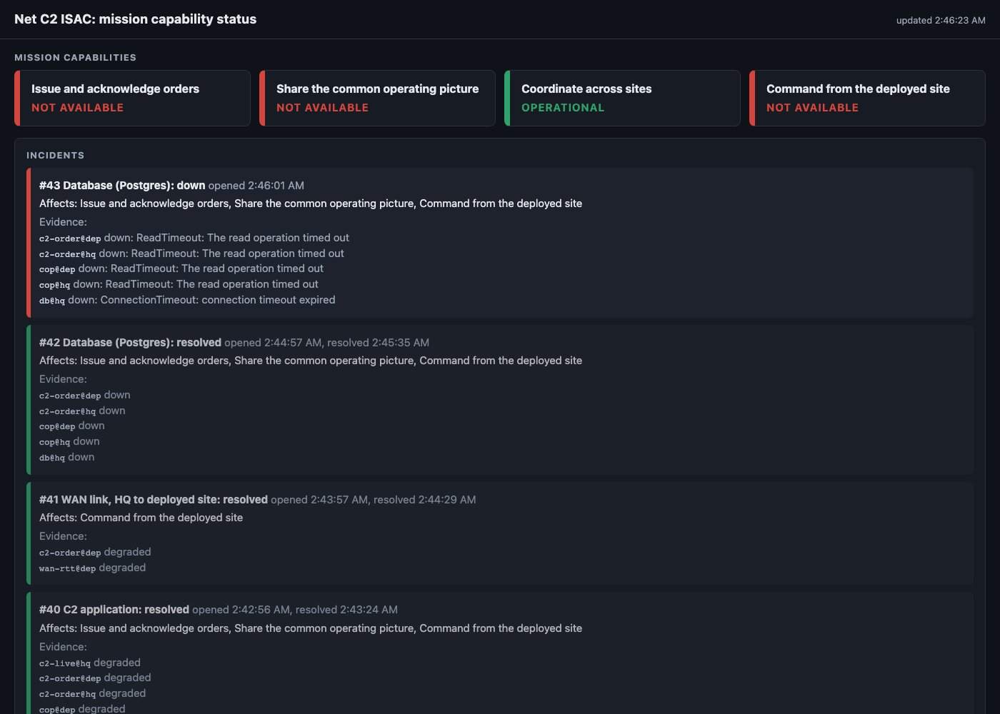
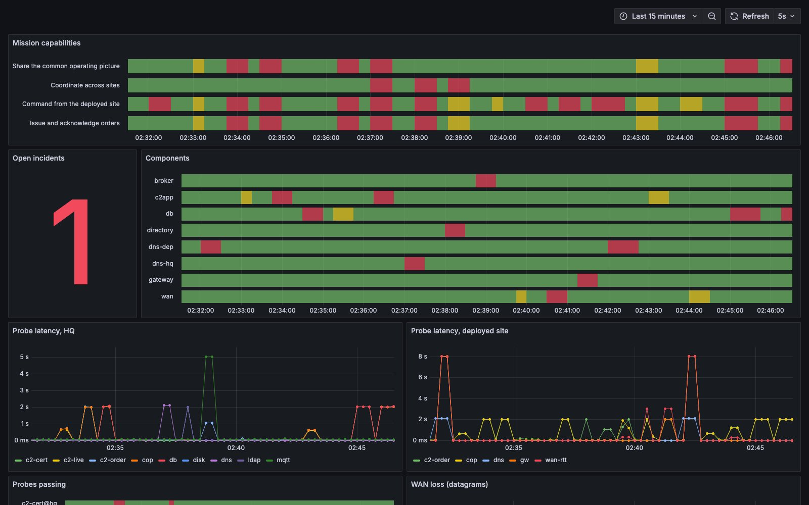

Net C2 ISAC Testbed: From IT Service Health to Mission Impact
A situational awareness testbed shaped by the Network Command and Control Integrated Situational Awareness Capability: probes running real transactions at two sites, a service model from mission capabilities down to components, and an engine that names what is really broken and what it costs commanders. In the second rehearsal it detected 36 of 36 injected faults and named the right cause first every time.
Overview
A commander does not need forty alerts about servers. They need to know whether they can issue orders, share the common picture and command from a deployed site, and if not, why, and when it will be back. This testbed turns the health of IT services into that answer.
The DND project, Net C2 ISAC, gives commanders coherent, real-time, integrated access to the health of the IT services that matter most to operations. It was launched by the Chief Information Officer group and awarded in 2022 to General Dynamics Mission Systems–Canada with CDW Canada. This build is the method at small scale: a monitored estate of real services at a headquarters and a deployed site, probes that use those services the way people do, and an engine that reasons from what fails and what still works to the one thing that is broken.
It was tested the hard way: twelve kinds of fault, each injected three times into the running estate with known ground truth, after a ten-minute run with no faults at all. In the second rehearsal every fault was detected in 5 to 15 seconds, the right cause was named first every time, and there were no false incidents. The first rehearsal was worse, and what it found is on this page.
Repository: github.com/TYFSADIK/netc2-isac-testbed (MIT licence).
The DND Project
From public sources: the contract announcement, a federal fairness monitoring report, and a Canadian Forces College paper that cites the project's Defence Capabilities Blueprint entry. The Blueprint page itself could not be reached when this was written.
| Item | Public detail |
|---|---|
| Project | Network Command and Control Integrated Situational Awareness Capability (Net C2 ISAC) |
| Purpose | Commanders get coherent, real-time, integrated and relevant access to the health of their IT services, focused on the services most important to operational effectiveness |
| Launched by | Assistant Deputy Minister (Chief Information Officer) |
| Budget | $50 million to $99 million (Defence Capabilities Blueprint, as cited) |
| Contract | Awarded to General Dynamics Mission Systems–Canada, with CDW Canada, in May 2022 after a competitive process; announced August 2022; multi-year |
| Solicitation | W8474-18NT10/A and W8474-18NT10/B, issued by Public Services and Procurement Canada for DND, with a fairness monitor |
| Industrial commitments | Cyber resilience and artificial intelligence |
Requirement by Requirement
| Need | In this build |
|---|---|
| Real-time health of IT services | Probes at each site run 14 real transactions every 2 seconds: DNS, directory sign-in, database write and read, messaging, a verified TLS handshake, a full order, the common picture, WAN round trip and loss, and disk space |
| Integrated | One service model ties mission capabilities to the services they need and the components under them; one engine reads every site |
| Coherent | Root-cause inference reports the one broken component, with its evidence, instead of every symptom |
| Relevant to operations | The commander's view leads with mission capabilities in plain words: operational, degraded, not available |
| Services most important to operations | The model weights by mission: a broker outage leaves orders degraded but coordination down |
| Cyber resilience and AI (industrial commitments) | Baselines learned from each probe's own history, anomaly detection on latency and loss, evidence-based inference, and a fault-injection rehearsal that measures all of it |
The Testbed
The monitored estate is real software, not mocks: CoreDNS at each site, an OpenLDAP
directory, Postgres on a small disk with an agent reporting its free space, a Mosquitto broker, and a
C2 application (an orders board and common operating picture over HTTPS) that depends on all of them
by name. The deployed site reaches HQ only through its gateway, whose HQ-side interface is the WAN;
faults degrade or cut it with tc netem. The probes and the engine use a separate
management network, so a WAN fault degrades the deployed site without blinding the monitoring.
The probes use each service the way a person or a dependent system would: sign in, write a row and read it back, submit an order end to end over verified HTTPS. A probe is down after two failures in a row and degraded when it is slower than its own learned normal for three samples, or reports loss or a warning.

How the Engine Decides
Root cause. Every unhealthy probe is evidence against the components it uses, and every healthy probe is evidence for them, weighted more when the component is the probe's own target. The engine then picks the smallest set of components that explains every unhealthy probe. A component whose own direct test fails is always a full-strength suspect.
Site-aware. If the same check passes at one site and fails from another, the failure is on the path between them. This is what tells a lossy WAN from a broken application:
Confirmation. A root cause must hold for two evaluations, two seconds apart, before an incident opens. Faults do not reach every probe at once: in the first second of a DNS outage only the order probes have failed, and they point at the C2 application. Two seconds of patience removed every such wrong first guess.
Impact, observed and inferred. States pass up the model, but observation beats inference: a service whose own end-to-end probe passes is not marked down by a dependency, and a service whose probe fails is never shown as fine. So a filling disk is a warning on the database with no mission impact yet, and a broker outage leaves orders going through unannounced: issuing orders degraded, coordination down.
Measured Results
The second rehearsal: a ten-minute baseline with no faults (no false incidents), then every fault three times, against ground truth.
| Fault | Detected | Detection, median (s) | Right cause first | Right state and impact | Resolved after recovery (s) |
|---|---|---|---|---|---|
| C2 application crashes | 3/3 | 7.5 | 3/3 | 3/3 | 7.4 |
| Database hangs | 3/3 | 8.8 | 3/3 | 3/3 | 6.8 |
| Database disk fills (a warning, nothing broken yet) | 3/3 | 5.4 | 3/3 | 3/3 | 8.4 |
| Certificate expires | 3/3 | 5.4 | 3/3 | 3/3 | 9.0 |
| HQ DNS stops | 3/3 | 9.3 | 3/3 | 3/3 | 10.5 |
| Directory hangs | 3/3 | 7.1 | 3/3 | 3/3 | 7.1 |
| Message broker stops | 3/3 | 11.4 | 3/3 | 3/3 | 7.4 |
| WAN degraded: 300 ms delay, 10% loss | 3/3 | 9.2 | 3/3 | 3/3 | 7.0 |
| WAN cut | 3/3 | 9.5 | 3/3 | 3/3 | 7.3 |
| Deployed site gateway stops | 3/3 | 9.3 | 3/3 | 3/3 | 7.4 |
| Deployed site DNS stops | 3/3 | 15.0 | 3/3 | 3/3 | 10.9 |
| C2 application overloaded (+600 ms) | 3/3 | 8.7 | 3/3 | 3/3 | 6.6 |

What the Rehearsals Found
The first full rehearsal also detected every fault, but named the wrong cause first in three runs and raised one false incident. Fixing what it found, and what the smoke tests before it found, is most of the work:
- A lossy WAN was blamed on the C2 application in 2 of 3 runs. The deployed site's orders time out across 300 ms and 10% loss, and they point at the application. The engine did not compare sites; now, when the same check passes at HQ, the failure is on the path. And a root's state comes from its own tests: the WAN is degraded while the deployed site's command capability is down.
- A soft dependency was hard. With the broker down, every order failed, because the application's broker connection had no timeout. An order should go through unannounced; with a one-second timeout it does.
- The monitoring path broke itself. Ten minutes into the first rehearsal the WAN probe failed: the gateway's UDP relay leaked a process per packet until it ran out of file descriptors. The engine was right; the fix was in the gateway.
- A full disk does not fail when you expect. Postgres pre-allocates its log, so writes keep succeeding on a full disk until a checkpoint, minutes later, crashes it. Watching the disk itself gives a warning before anything breaks.
- First impressions mislead. Faults reach probes over a second or two; the first partial picture blamed the wrong component. Requiring a cause to hold for two evaluations fixed it at a cost of two seconds.
- Evidence weighting matters. A passing disk check once outvoted a failing write test on the same database; a component's own failing test now always counts in full.
The full table, with every cause and change, is in docs/03-findings.md.
How to Build It
Docker (or Colima on a Mac) and Python. ./local/rehearse.sh up builds one image and starts 15 containers on three networks, then waits until every capability is green. The commander's view is on port 8080, Grafana on 3000.
Everything the engine knows is in one file, model/service-model.yaml: the mission capabilities, the services each needs, the components under them, and which probe tests which component through which others.
docker pause the database, or add delay and loss to the gateway with tc netem, and watch the commander's view name the cause. ./local/rehearse.sh test runs the full rehearsal and writes the results table.
python -m pytest tests: 21 tests feed the engine the probe pattern each fault produces and check the root cause, its state and the mission impact, with no Docker needed.
Frequently Asked Questions
What is Net C2 ISAC?
The Network Command and Control Integrated Situational Awareness Capability is a National Defence project, launched by the Chief Information Officer group, to give commanders coherent, real-time access to the health of the IT services that matter most to operations. It was awarded to General Dynamics Mission Systems-Canada with CDW Canada in 2022.
Is this part of Net C2 ISAC?
No. It is an independent open-source build shaped by the public description of the project, built on my own machine from public information only. It is not affiliated with or submitted to DND or the companies delivering the project.
How does it find the real cause instead of every symptom?
Every probe uses some components; a failing probe is evidence against them and a passing probe is evidence for them. The engine picks the smallest set of components that explains every failing probe, compares the same check across sites to tell a broken service from a broken path, and waits two seconds for the picture to settle before opening an incident.
How do you know it works?
Twelve kinds of fault were injected three times each into the running estate with known ground truth, after ten minutes with no faults. In the second rehearsal all 36 were detected in 5 to 15 seconds, the right cause was named first every time, and there were no false incidents.
Would this scale to a real defence network?
The method does; this estate is eight components. A real deployment would discover its service model from a configuration database and traffic, add host and network metrics from every device, partition the inference by site, and harden every connection. Those differences are written up in the repository.
What Happens Next
- Next: host and network metrics from every component (CPU, memory, interface errors), so more faults are seen before they fail.
- Then: a service model discovered from traffic and a configuration database instead of written by hand.
- Later: run it against the ITI C2 testbed's three-site infrastructure, so the awareness watches a real resilient estate.
Cite This Page
Citation formats
Plain text
Taki Sadik, "Net C2 ISAC Testbed: From IT Service Health to Mission Impact", TYFSADIK, https://tyfsadik.org/work/defence/network-c2-situational-awareness (accessed 2026-11-25).BibTeX
@misc{sadik-netc2-isac-testbed,
author = {Sadik, MD. Taki Yasir Faraji},
title = {Net C2 ISAC Testbed: From IT Service Health to Mission Impact},
year = {2026},
url = {https://tyfsadik.org/work/defence/network-c2-situational-awareness},
urldate = {2026-11-25}
}APA
Sadik, M. T. Y. F. (2026). Net C2 ISAC Testbed: From IT Service Health to Mission Impact. TYFSADIK. https://tyfsadik.org/work/defence/network-c2-situational-awareness